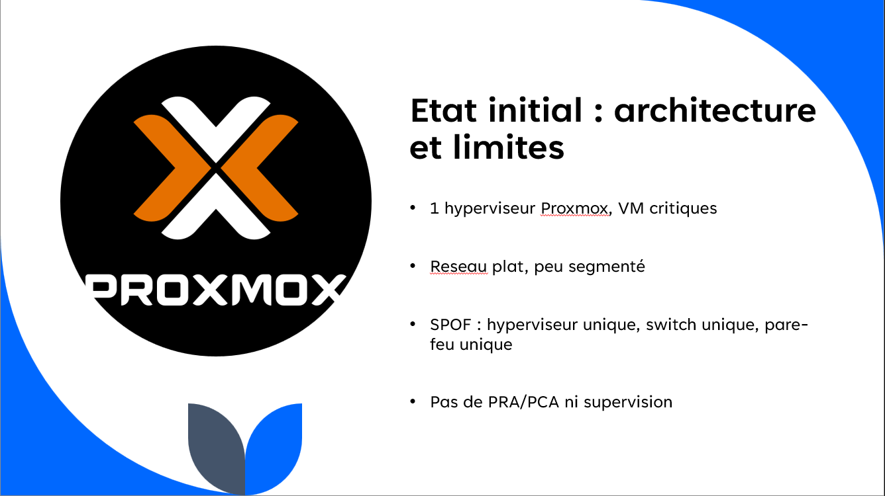
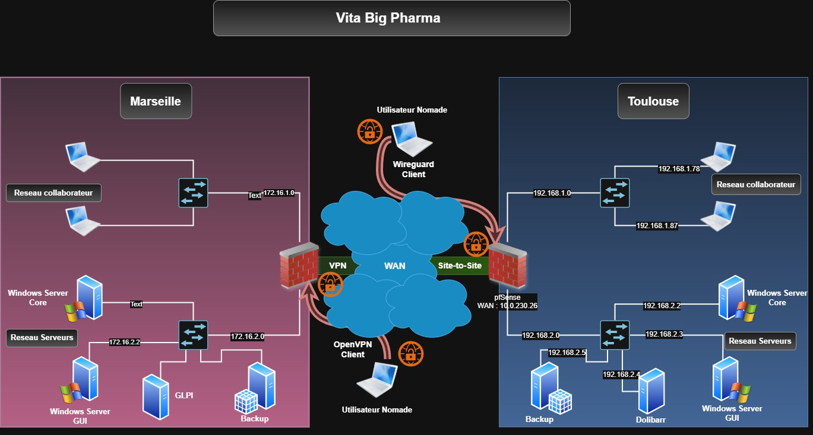
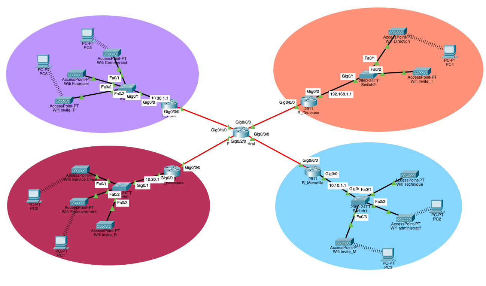
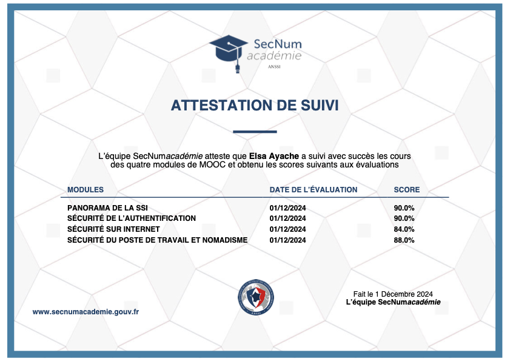

Mon Parcours
Elsa Ayache
Administration systèmes & réseaux, sécurité des SI, services réseau. Deux stages techniques réalisés chez Collins Aerospace.
Fondamentaux en algorithmique, base de données (SQL) et systèmes d'information.
Poursuite en administration avancée et sécurisation des infrastructures.
Bachelor Admin. Sys & Réseaux
À la rentrée 2026, je rejoindrai l'EPSI Balma. Cette formation en alternance me permettra de consolider mon expertise dans des environnements de production.
Gestion d'environnements Windows Server/Linux, clusters HA.
Routage, VPN, sécurité périmétrique et supervision.
Mon École
IRIS — Campus de Toulouse
L'école IRIS propose une pédagogie axée sur la pratique, me permettant de développer des compétences concrètes.
J'y consolide mon expertise en administration système (serveurs locaux/Cloud), sécurisation des flux et gestion d'incidents, essentielle pour mon parcours SISR.
Ma Stack Technique
Systèmes & Virtualisation
Déploiement et administration d'infrastructures serveurs.
Réseaux & Sécurité
Conception, sécurisation et supervision d'architectures réseaux.
Scripting & Outils
Automatisation de tâches et gestion de parc.
Expériences Professionnelles
Collins Aerospace
Support technique N1/N2 et maintien en condition opérationnelle.

Collins Aerospace
Déploiement d'infrastructures postes de travail et masterisation.
Infrastructure & Projets

Cluster Proxmox HA
Tolérance aux pannes et sécurisation du SI d'EcoSolar Solutions.

Réseau Multi-site
Conception d'un WAN sécurisé et plan d'adressage IP.

Infrastructure d'Entreprise
Mise en œuvre de services réseaux (DHCP, NAT) et sécurisation (ACL).

OverTheWire
Consolidation compétences Bash et initiation à la cybersécurité

MOOC SecNumAcadémie
Validation des bonnes pratiques de sécurité numérique de l'ANSSI.
Veille Technologique
Contact
Prêt à renforcer votre équipe IT ?
Actuellement à la recherche d'une alternance pour mon Bachelor Admin. Sys & Réseaux, je suis à votre disposition pour discuter de mon profil et de mes motivations.